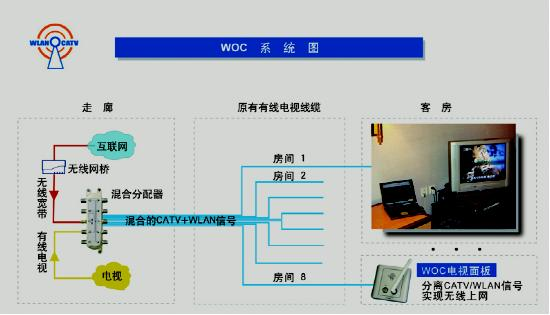
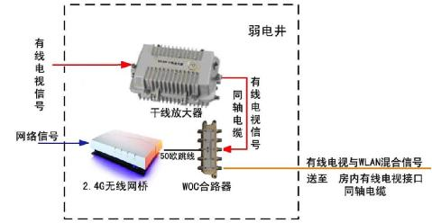
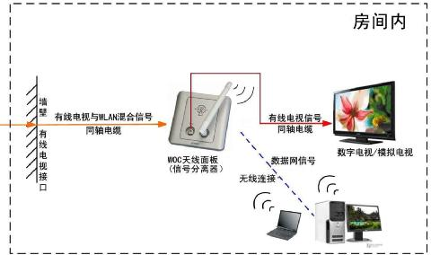

地址：无锡市菱湖大道200号中国传感网国际创新园B幢227室
展厅1：无锡运河东路557号时代国际C幢1502室
展厅2：无锡市锡沪东路1号安防城
电话：400-0510-921 0510-81817497
邮箱：fr@feirantec.com
400 - 0510 - 921

绿色WOC无线网络覆盖
WOC工作原理
WOC(WLAN over CATV)利用现有的有线电视系统进行房间无线信号覆盖，彻底解决了别墅传统无线网络同频干扰和信号穿墙变弱的难题。
WOC利用有线电视系统传输802. 11b/g无线网络，1个AP可以覆盖8个或更多的房间，能够为别墅实现其他技术或方案达不到的优质无线信号覆盖，并且无线网络连接可靠，实现高速上网。
从传输角度看，WOC是一套802.11b/g无线网络的天线延伸系统。AP集中安装在设备间，在这里WLAN和CATV信号混合后一起输入到现有的CATV线路， 利用CATV线路同轴电缆在全屏蔽无干扰下直接输送到每一房间内，最后通过WOC面板（分离器）将信号分开，实现房间内优质无干扰无线网络覆盖和电视功能，由于工作频道不同， WLAN 和CATV信号互不干扰，其过程为：
1. 进入房间前，AP无线网桥2.4GHz信号和有线电视信号在设备间输入到专用的合路分配器，由其产生混合的WLAN/CATV信号。
2. WLAN/CATV混合信号通过现有的有线电视线缆传送到每一个有电视面板的房间。
3. 进入房间后，混合信号通过专用的WOC电视面板进行信号分离。
4. 分离出的WLAN信号由面板的天线发射出去，电脑高速无线上网，同时CATV信号传输到电视机，可以收看电视节目。
目前CATV常用的线缆是SY(W)V-75-5同轴电缆，SY(W)V-75-5同轴电缆是专门为有线电视生产的，传统观点认为在传输2.4g的频率衰减很大，最好不使用。根据实际测量，SY(W)V-75-5同轴电缆率衰一般是50db/100米左右。微波链路损耗计算公式：损耗（以dB为单位）＝32.5+20log(频率，GHz)＋20log(距离，米)+传输线缆损耗。假设传输到50米处，通过计算，采用CATV线缆的传输损耗要比通过空气传输少9db左右，如果再考虑墙壁对无线传输的15—25dB损耗，CATV线缆传输至少要比传统的覆盖方式减少了25db的损耗，足可以达到3格以上的信号强度，WOC就是基于这点提出的，成功项目的实地测试也同样证明了这一点和WOC实用性。
WOC技术优势

信号强：覆盖均匀，没有死角；实现房间内3～5格的无线信号
无同频干扰：因为为每个AP点做了屏蔽处理，所以有效的解决了AP之间同频干扰现象；一个 AP信号分配到 8 间房间，加上 CATV 线缆的自然损耗，延伸到房间内的无线信号不会过强 ，造成和其他 AP 的信号干扰。同时这些房间在同一AP有效的工作和管理下，彼此之间不会干扰。
工作稳定：在同一房间内不会收到好几个AP信号，不会出现传统覆盖方式的 “时断时续，无线网络跳来跳去”的现象。
覆盖房间多：一个AP能覆盖8间或更多的房间。
网络速度高
无须WLAN现场勘测即可制定方案：只需要根据CATV图纸，更换对应的分支／分配器
网络管理有效容易
施工简单：无须更改现有同轴电缆网结构。
低辐射: 功率只有传统覆盖方式的几十分之一，符合国家相关规定，确保人身安全。
产品通过 << 国家广播电视产品质量监督检验中心 >> 认证：符合有线电视系统标准，可以安全合格使用，不会影响现有 CATV 系统运作。
WOC连接示意图

